Sistema de diseño de CalcImp
La marca sale del Manual de identidad de CalcImp (versión inicial, octubre 2026). Encima va la dirección de arte que se aprobó con M1-01 para los anuncios: escena con personaje, logo oficial y texto en la tipografía de la marca. Esta página reúne todo eso para verlo de un vistazo.
1 · Logo
«Calc» en negro, «Imp» en dorado y el ícono de calculadora en gris. Se usa el archivo oficial, nunca redibujado: no se deforma, no se recolorea, no se recompone y lleva aire alrededor. Va una vez por pieza. Sobre foto oscura se usa la versión inversa o la blanca.
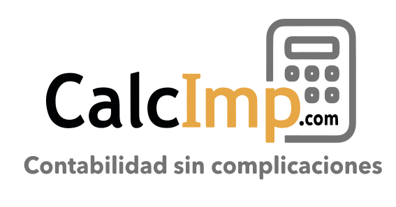
Color con lema
Color sin lema
Blanca (fondo oscuro)
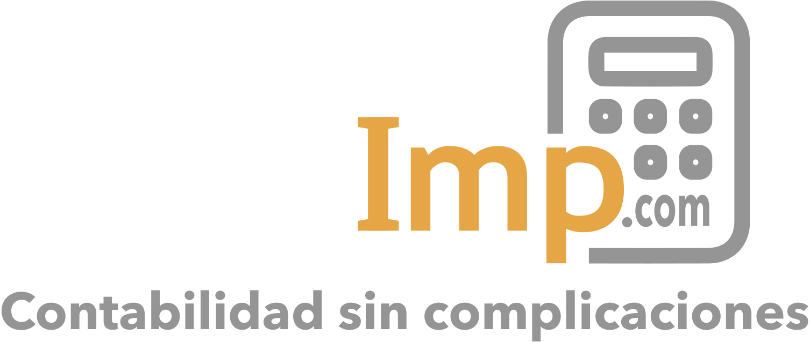
Inversa con lema (sobre foto oscura; la de los anuncios)
Una tinta, negra
Ícono solo
2 · Paleta
3 · Tipografía
Montserrat 700
Montserrat 600
Títulos y titulares de los anuncios.
Open Sans 400: texto de párrafo, apoyos y pies de los anuncios.
Open Sans 600: énfasis y botones.
Arial como respaldo.
4 · Cómo se arma un anuncio
- Logo arriba a la izquierda, versión inversa sobre la foto.
- Call-out en dorado: a quién le habla («Para despachos contables»).
- Titular en Montserrat 700, blanco, con la palabra clave en dorado. Legible en el celular: 48 px o más a 1080 de ancho.
- Apoyo en Open Sans, una línea.
- Pie con la oferta en gris claro: «Prueba 30 días, sin tarjeta».
- Sin botón dibujado: el botón lo pone Facebook o Instagram.
- Sin capturas del sistema encima del arte: las pantallas reales van en las landings.
Esquema de referencia; las piezas reales están en «Artes y copys de Meta».
Así se ve aplicado
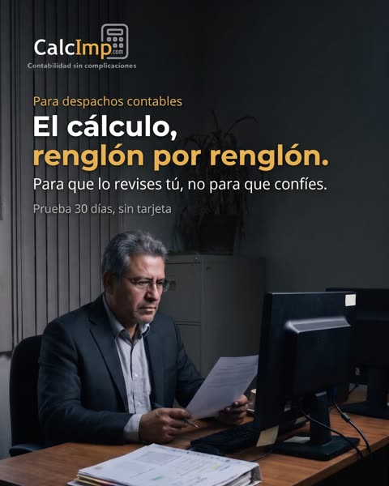
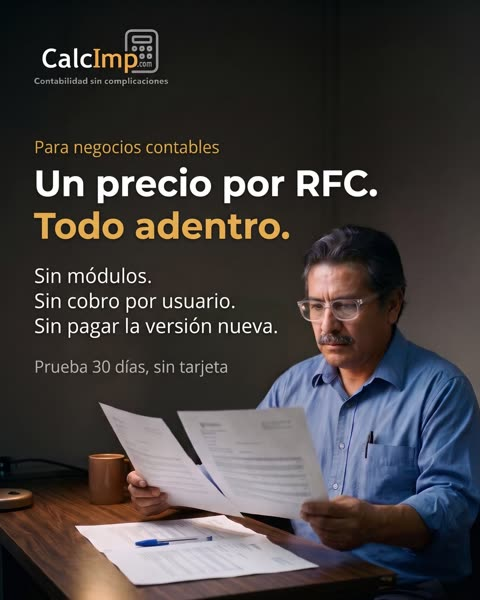
5 · Personajes
6 · Escenarios
Despachos mexicanos de trabajo real. Estas son las bases; en el arte final se oscurecen para que el texto blanco se lea. La IA pone el ambiente; nunca dibuja pantallas, letreros ni papeles con texto.
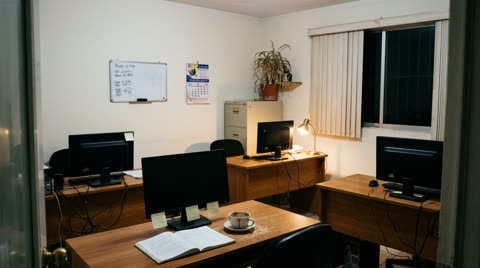
Despacho de noche
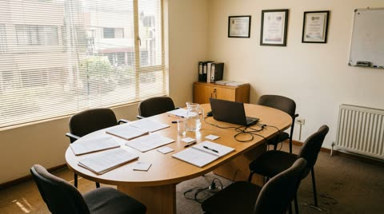
Sala de socios
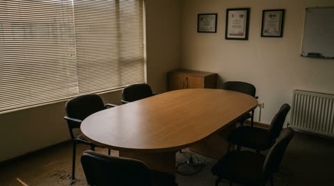
Sala de juntas vacía
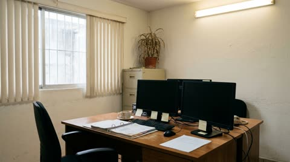
Dos monitores (de espaldas)
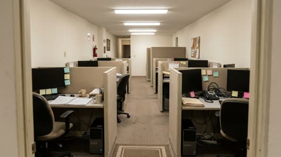
Piso de cubículos
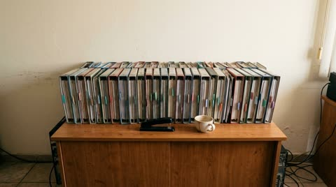
Credenza con carpetas
7 · Formatos
- Meta, feed: 4:5 · 1080 × 1350.
- Meta, historias y reels: 9:16 · 1080 × 1920, con 250 px libres arriba y abajo.
- Carrusel: 1:1 · 1080 × 1080 o 4:5, de 3 a 10 tarjetas con un hilo.
- Google Display: 1.91:1 · 1200 × 628 y 1:1 · 1200 × 1200.
8 · Lo que no es la marca
#FF6900, #FFB44C) y la tipografía Poppins venían del tema del sitio actual: no son de la marca y no se usan en piezas nuevas.